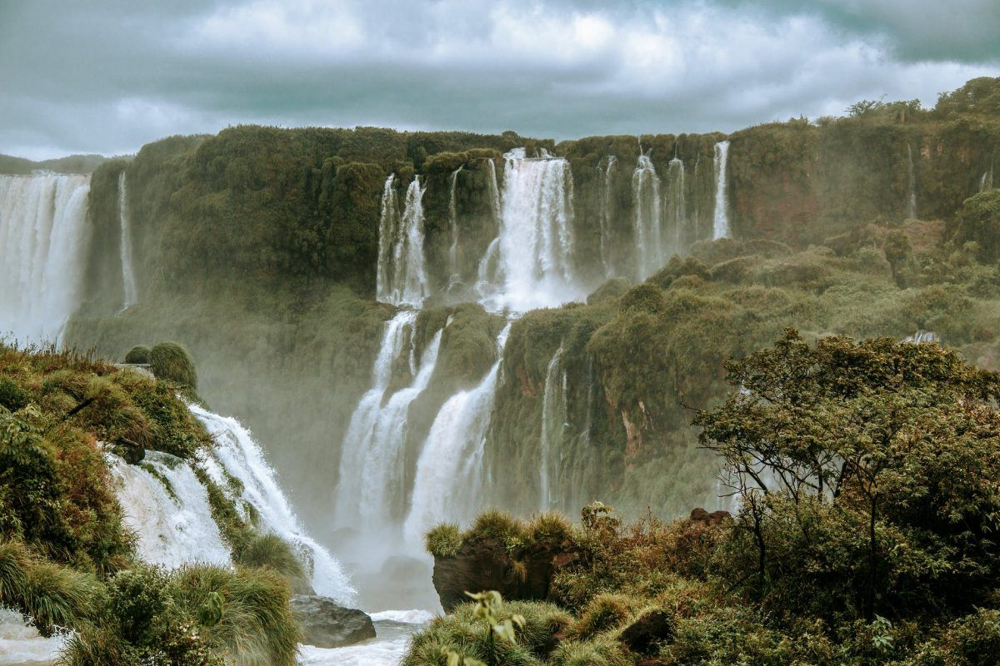
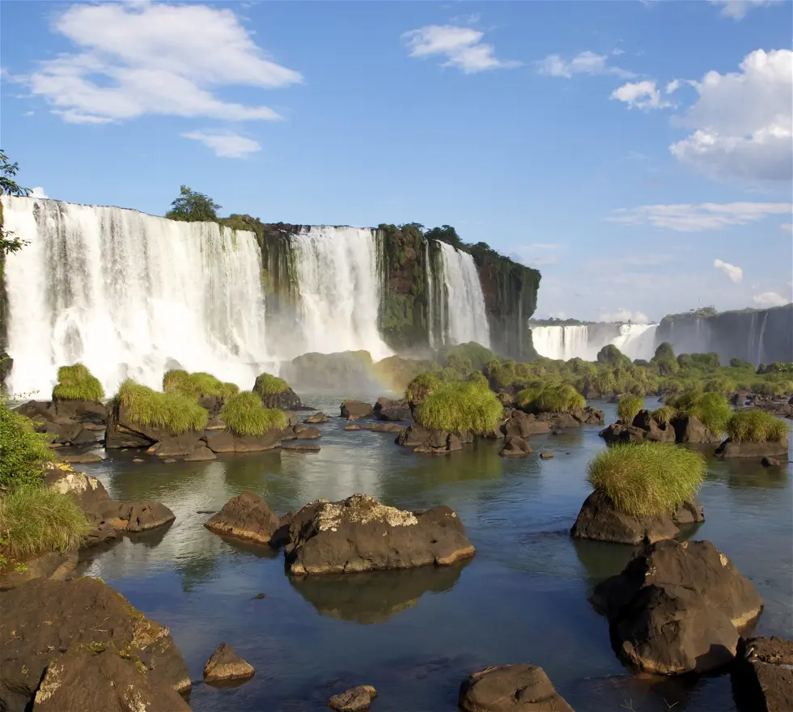
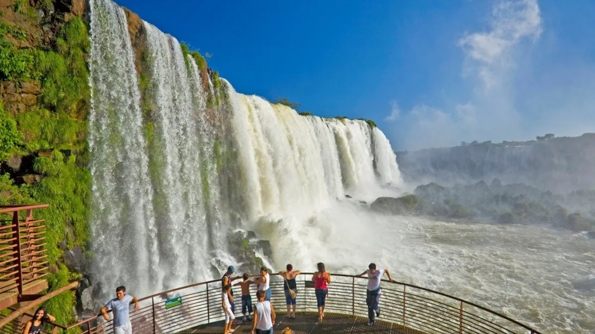
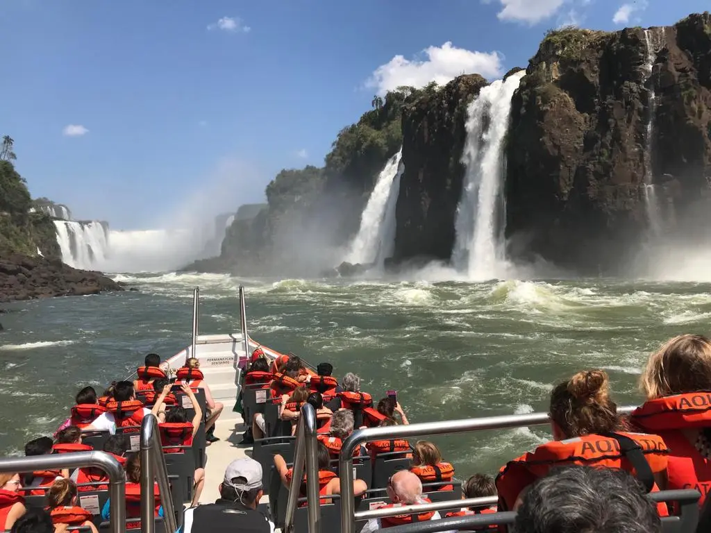

«Cataratas» o «Iguazú», son un conjunto de cataratas que se localizan en el río Iguazú, en el límite entre la provincia argentina de Misiones, el estado brasileño de Paraná. Están totalmente insertadas en áreas protegidas; el sector de la Argentina se encuentra dentro del parque nacional Iguazú, mientras que el de Brasil se encuentra en el Parque nacional del Iguazú (Parque Nacional do Iguaçu), en el Estado de Paraná. Se encuentran próximas a la frontera entre Paraguay y Argentina, a sólo 13,8 km en línea recta. Fueron elegidas como una de las «Siete maravillas naturales del mundo».
Están formadas por 275 saltos; el 80 % de ellos se ubican del lado argentino. Un espectáculo aparte es su salto de mayor caudal y, con 80 m, también el más alto, la Garganta del Diablo, el cual se puede disfrutar en toda su majestuosidad desde solo 50 m, recorriendo las pasarelas que parten desde Puerto Canoas, al que se llega utilizando el servicio de trenes ecológicos. Por este salto pasa la frontera entre ambos países. Se pueden a características de la zona: “Una exuberante y casi tropical vegetación, la frondosidad de los grandes helechos, las cañas de los bambúes, los graciosos troncos de las palmeras y miles de especies de árboles, con sus copas inclinándose sobre el abismo adornado con musgos, begonias rojas, orquídeas de oro, bromelias brillantes y bejucos con flores trompetas
Las Cataratas del Iguazú se encuentran en la húmeda y estrafalaria ciudad de Puerto Iguazú, ubicada en la mayor provincia productora de yerba mate en Argentina, Misiones.Al norte de la provincia de Misiones, en el límite con Brasil.